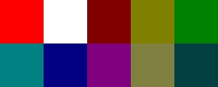

bool load_files()
{
//加载图像
topLeft = load_image( "corner.png" );
//如果加载图像出现问题
if( topLeft == NULL )
{
return false;
}
//如果所有加载完成
return true;
}
在我们的加载函数中，我们仅仅加载一张图片：
为了显示所有的四个角，我们必须通过翻转我们已经加载好的图像来创建它们。
为了显示所有的四个角，我们必须通过翻转我们已经加载好的图像来创建它们。
Uint32 get_pixel32( SDL_Surface *surface, int x, int y )
{
//转换像素为32位
Uint32 *pixels = (Uint32 *)surface->pixels;
//获取请求的像素
return pixels[ ( y * surface->w ) + x ];
}
void put_pixel32( SDL_Surface *surface, int x, int y, Uint32 pixel )
{
//转换像素为32位
Uint32 *pixels = (Uint32 *)surface->pixels;
//设置像素
pixels[ ( y * surface->w ) + x ] = pixel;
}
这里是我们获取和设置像素的函数。如果你错过了"位图字体"那一课，这里有一个有关像素访问是如何工作的快速复习：
我们做的第一件事就是将像素指针的类型从void转换成32位整数指针，这样我们才能正确地访问它们。毕竟一个表面的像素仅仅是一个32位整数的数组。随后，我们就能获取或设置请求的像素了。
你可能想知道为何我不直接用"return pixels[ x ][ y ]"。
原因是，像素不是像这样存储的：
它们是像这样存储的：
以一维数组的方式存储的。因为不同操作系统以不同的方式存储二维数组（至少我认为这是原因）。
所以为了从数组中提取红色的像素信息，我们用y坐标乘以宽度再加上x坐标。
这些函数只在32位表面上起作用。如果你在使用一个不同格式的表面，你需要自己实现这样的函数。
你可以在文章3中学到更多有关像素的知识。
我们做的第一件事就是将像素指针的类型从void转换成32位整数指针，这样我们才能正确地访问它们。毕竟一个表面的像素仅仅是一个32位整数的数组。随后，我们就能获取或设置请求的像素了。
你可能想知道为何我不直接用"return pixels[ x ][ y ]"。
原因是，像素不是像这样存储的：

它们是像这样存储的：
所以为了从数组中提取红色的像素信息，我们用y坐标乘以宽度再加上x坐标。
这些函数只在32位表面上起作用。如果你在使用一个不同格式的表面，你需要自己实现这样的函数。
你可以在文章3中学到更多有关像素的知识。
SDL_Surface *flip_surface( SDL_Surface *surface, int flags )
{
//指向将要翻转的表面的指针
SDL_Surface *flipped = NULL;
//如果图像带有关键色
if( surface->flags & SDL_SRCCOLORKEY )
{
flipped = SDL_CreateRGBSurface( SDL_SWSURFACE, surface->w, surface->h, surface->format->BitsPerPixel, surface->format->Rmask, surface->format->Gmask, surface->format->Bmask, 0 );
}
//否则
else
{
flipped = SDL_CreateRGBSurface( SDL_SWSURFACE, surface->w, surface->h, surface->format->BitsPerPixel, surface->format->Rmask, surface->format->Gmask, surface->format->Bmask, surface->format->Amask );
}
现在这里是我们的表面翻转函数。
在最上面，我们用
在我们能创建空白表面前，我们必须检查一下这个表面是否带有关键色。如果是的，我们在新的空白表面上设置alpha掩码为0。这是因为如果alpha掩码不是0，关键色会被忽略。如果源表面没有关键色，我们仅仅将其alpha掩码拷贝到新的空白表面上。
查看一下SDL文档，看看
在最上面，我们用
SDL_CreateRGBSurface()创建了一个空白表面。这看上去可能有点复杂，但最终我们仅仅是创建了一个与给定表面具有相同大小和格式的表面。
在我们能创建空白表面前，我们必须检查一下这个表面是否带有关键色。如果是的，我们在新的空白表面上设置alpha掩码为0。这是因为如果alpha掩码不是0，关键色会被忽略。如果源表面没有关键色，我们仅仅将其alpha掩码拷贝到新的空白表面上。
查看一下SDL文档，看看
SDL_CreateRGBSurface()函数是如何工作的。
//如果表面必须被锁定
if( SDL_MUSTLOCK( surface ) )
{
//锁定表面
SDL_LockSurface( surface );
}
在我们能开始修改像素前，我们必须用
既然表面已被锁定，是时候玩弄像素了。
SDL_MUSTLOCK()检查一下这个表面是否在访问像素前必须锁定。如果SDL_MUSTLOCK()告诉我们必须锁定表面，我们就用SDL_LockSurface()来锁定表面。
既然表面已被锁定，是时候玩弄像素了。
//遍历列
for( int x = 0, rx = flipped->w - 1; x < flipped->w; x++, rx-- )
{
//遍历行
for( int y = 0, ry = flipped->h - 1; y < flipped->h; y++, ry-- )
{
这里是我们遍历像素的嵌套循环。你可能想知道为何我们在for循环中声明两个整数。原因是当你翻转像素时，你需要从一个方向读取它们并以相反的方向写入它们。
在x循环中，我们声明"x" 和 "rx"。 "x" 被初始化为0，"rx"（代表了相反的x）被初始化为宽度减1，也就是表面的最末端。
然后，中间的条件很普通，最后"x"自增并且"rx"自减。"x" 会从始端开始向前走，"rx" 从末端向回走。
所以如果表面的宽度为10，for循环会像这样运行：
"x" : 0 1 2 3 4 5 6 7 8 9
"rx" : 9 8 7 6 5 4 3 2 1 0
我很确定你可以想明白"y" 和 "ry"是做什么的了。
在x循环中，我们声明"x" 和 "rx"。 "x" 被初始化为0，"rx"（代表了相反的x）被初始化为宽度减1，也就是表面的最末端。
然后，中间的条件很普通，最后"x"自增并且"rx"自减。"x" 会从始端开始向前走，"rx" 从末端向回走。
所以如果表面的宽度为10，for循环会像这样运行：
"x" : 0 1 2 3 4 5 6 7 8 9
"rx" : 9 8 7 6 5 4 3 2 1 0
我很确定你可以想明白"y" 和 "ry"是做什么的了。
//获取像素
Uint32 pixel = get_pixel32( surface, x, y );
//复制像素
if( ( flags & FLIP_VERTICAL ) && ( flags & FLIP_HORIZONTAL ) )
{
put_pixel32( flipped, rx, ry, pixel );
}
else if( flags & FLIP_HORIZONTAL )
{
put_pixel32( flipped, rx, y, pixel );
}
else if( flags & FLIP_VERTICAL )
{
put_pixel32( flipped, x, ry, pixel );
}
}
}
这是嵌套循环的中间部分。
首先我们从源表面读入像素。然后如果用户传入了FLIP_VERTICAL 和 FLIP_HORIZONTAL标识，我们就从右往左、从下往上将像素写入空白表面上。
如果用户只是传入了 FLIP_VERTICAL 标识，我们就从左往右、从下往上将像素写入空白表面上。
If the user just passed the FLIP_HORIZONTAL flag, we write the pixels to the blank surface right to left, top to bottom. 如果用户只是传入了 FLIP_HORIZONTAL 标识，我们就从右往左、从上往下将像素写入空白表面上。
如果你想知道这些标识是什么，它们就在源码的顶部附近。
首先我们从源表面读入像素。然后如果用户传入了FLIP_VERTICAL 和 FLIP_HORIZONTAL标识，我们就从右往左、从下往上将像素写入空白表面上。
如果用户只是传入了 FLIP_VERTICAL 标识，我们就从左往右、从下往上将像素写入空白表面上。
If the user just passed the FLIP_HORIZONTAL flag, we write the pixels to the blank surface right to left, top to bottom. 如果用户只是传入了 FLIP_HORIZONTAL 标识，我们就从右往左、从上往下将像素写入空白表面上。
如果你想知道这些标识是什么，它们就在源码的顶部附近。
//解锁表面
if( SDL_MUSTLOCK( surface ) )
{
SDL_UnlockSurface( surface );
}
//复制关键色
if( surface->flags & SDL_SRCCOLORKEY )
{
SDL_SetColorKey( flipped, SDL_RLEACCEL | SDL_SRCCOLORKEY, surface->format->colorkey );
}
//返回翻转后的表面
return flipped;
}
在表面翻转函数的最后，我们检查表面是否必须被锁定。如果是的，我们就用
然后如果我们要翻转的表面带有关键色，我们就将源表面的关键色复制到新的翻转后的表面上。
最后我们返回我们新创建的翻转后的表面的指针。
SDL_UnlockSurface()来解锁表面。
然后如果我们要翻转的表面带有关键色，我们就将源表面的关键色复制到新的翻转后的表面上。
最后我们返回我们新创建的翻转后的表面的指针。
//翻转表面
topRight = flip_surface( topLeft, FLIP_HORIZONTAL );
bottomLeft = flip_surface( topLeft, FLIP_VERTICAL );
bottomRight = flip_surface( topLeft, FLIP_HORIZONTAL | FLIP_VERTICAL );
//应用图像到屏幕上
apply_surface( 0, 0, topLeft, screen );
apply_surface( 320, 0, topRight, screen );
apply_surface( 0, 240, bottomLeft, screen );
apply_surface( 320, 240, bottomRight, screen );
//更新屏幕
if( SDL_Flip( screen ) == -1 )
{
return 1;
}
这是表面翻转函数所应用的地方。然后，表面被应用到屏幕上，并且屏幕被更新以显示钻石的图案。